Rendering Surface Interfaces
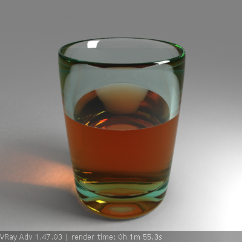
Rendering surface interfaces Overview
In this tutorial, we will discuss the rendering of refractive surface interfaces with V-Ray. A typical example of this is the rendering of a liquid in a glass container. The problem is that we have two separate objects, which share the exact same surface boundary.
From a modelling point of view, it is very difficult to ensure that the two objects have the exact same boundary geometry. While this can be achieved (although with difficulty) for static scenes, things become very problematic in animation.
From a rendering point of view, if the two surfaces match exactly, the renderer cannot distinguish between them accurately, which may lead to errors in the rendering.
Considering these two issues, it is obvious that we will need to separate the surfaces, or to model the surface interface separately. We have the following three options:
-
The liquid and the container do not touch and have a gap between them. This approach is simple to implement and does not require any special support from the renderer. However, it does not produce a realistic result. This is because the gap between the two surfaces changes the rendering drastically and makes the liquid look like a solid block.
-
The liquid overlaps the container. This approach potentially produces much more realistic results, but it requires special support from the renderer. This is because the renderer must keep track of which surfaces have been intersected along a ray path, so that it can compute the correct index of refraction. Without this built-in support, this method cannot be used. Luckily, V-Ray supports the necessary framework for this, which makes this approach the preferred one.
-
The third approach is to model the interface separately. In general, this is difficult to implement - especially in animations. Further on, with this approach introduces a third object in the scene with a separate material, which makes things more complicated. Also, it will not work very well with things like fog in the glass - since in that case, V-Ray cannot make the connection between the glass/liquid material, and the surface interface material, and cannot apply the correct fogging value.
Below, we will discuss the first two methods only; the third method is more difficult, and we do not recommend it with V-Ray.
Initial Rendering
1.1. Open the starting scene, which can be found here.
1.2. Assign V-Ray as the current renderer.
1.3. To make the previews of the scene faster, go to the Image sampler rollout and set the Image sampler type to Fixed.
Next, we want to get some GI:
1.4. In the Indirect illumination rollout, turn GI on.
1.5. Turn off the Refractive GI caustics. We will add photon-mapped caustics later on for the final image.
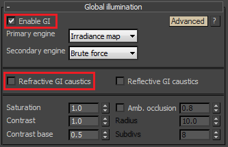
1.6. Optionally, turn on the frame stamp from the System rollout.
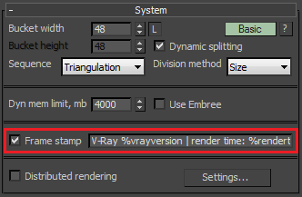
1.7. Render:
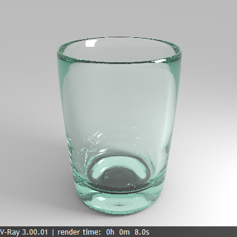
This shows the container that we will fill with liquid in the next section.
Rendering the liquid
Now that we have the container, we have to add the liquid.
2.1. Unhide the "liquid inside" object. If you look at the from the Front viewport, you will notice that the object is slightly inside the glass container, without touching it:
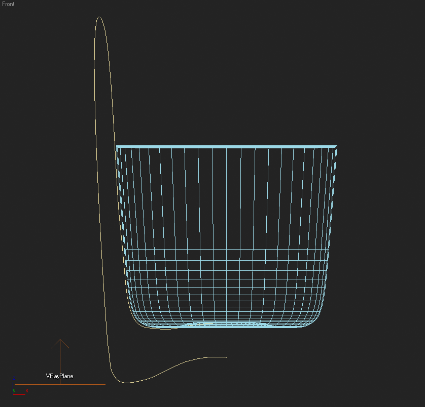
2.2. Render:
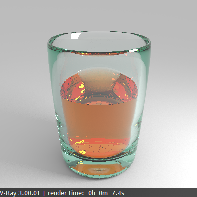
Although the distance between the container and the liquid is really small, the rendering does not look realistic - it looks like we have a glass with a solid block inside it. To avoid this, we will make the liquid to overlap the container a little bit.
2.3. Hide the "liquid inside" object and unhide the "liquid overlapped" object. In the Front viewport you can notice that this object overlaps the container a little bit:
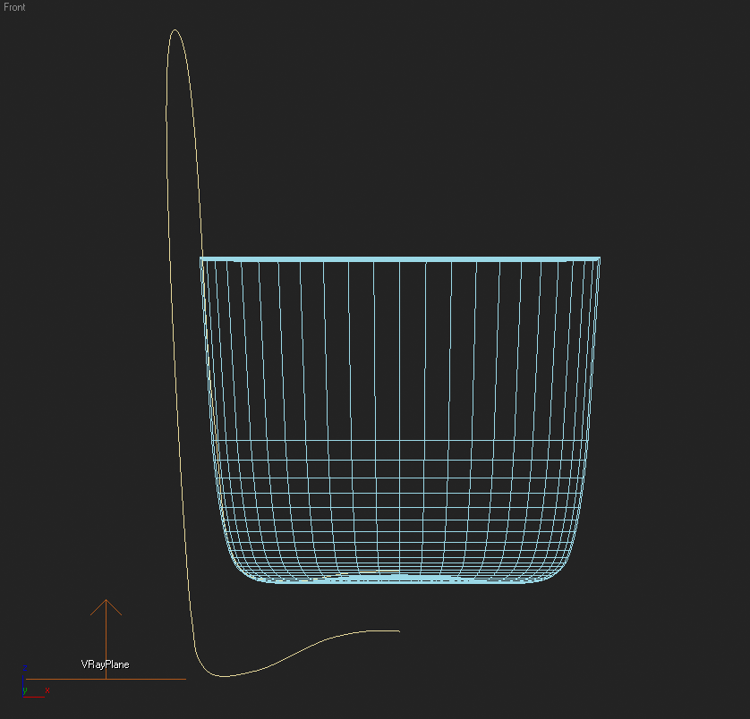
2.4. Render:
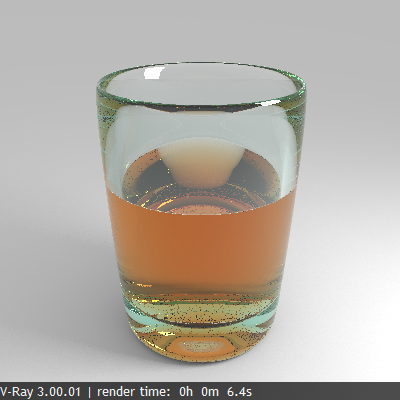
Now it looks a lot better; the liquid really seems to be touching the glass.
Final Rendering
For the final rendering we would like to improve the antialiasing, and to add some caustics.
3.1. Turn Caustics on from the Caustics rollout.
3.2. Set the Max. density to 0.2 - we want to limit the caustics photon density, since this allows us to shoot more caustics photons for a smoother caustics effect.
3.3. Set the Search distance to 2.0. Typically values of 5 to 10 times the Max. density parameter work well.
3.4. Set the Max. photons parameter to 0 - this will cause V-Ray to consider all photons within the search distance from the shaded point.
3.5. Render:
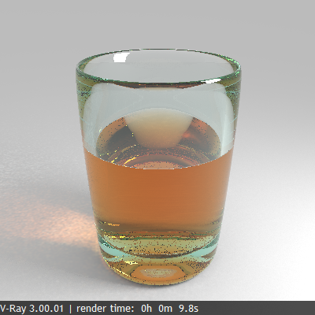
Rendering now takes a little more time, since V-Ray needs to compute the caustics as well.
We have caustics now, but they appear quite noisy. We can reduce the noise by increasing the Caustics subdivs for the light.
3.6. Select the VRayLight object.
3.7. Right-click in the viewport and select "V-Ray properties..." to bring up the V-Ray Light settings dialogue.
3.8. Set the Caustics subdivs to 4000.
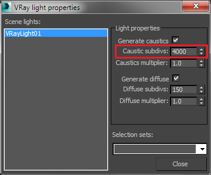
3.9. Render:
Caustics look better now and these are the settings that we will use for the final rendering. If you want even smoother caustics, further increase the Caustics subdivs of the light and/or increase the Search distance parameter.
3.10. In order to avoid recomputing the caustics every time for the next renderings, save the caustics photon map to file, set the Caustics mode to From file, and select the saved caustics map with the Browse button.
Now we need to improve the antialiasing and to reduce the noise from the area light.
3.11. In the Image sampler rollout, set the Image sampler type to Adaptive.
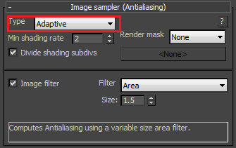
3.12. In the Adaptive image sampler rollout, set the Max subdivs to 8 to get better antialiasing.
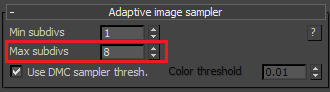
3.12. In the Global DMC rollout, set the Noise threshold to 0.002.
3.13. Set the Global subdivs multiplier to 8.0 - this will reduce the noise from the area light.
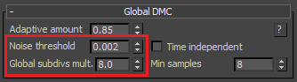
3.14. Render:
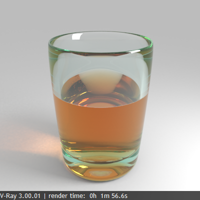
This is our final image.
Alternative Rendering Approach
Another way to render the image is to use the new Progressive image sampler in V-Ray. This approach was used to render the image at the top of the page.
4.1. Turn off the photon-mapped caustics;
4.2. Set the primary and secondary GI engines to Brute force;
4.3. Turn on the Refractive caustics option that we disabled before;
4.4. Set the image sampler type to Progressive;
4.5. Render until you like the result .